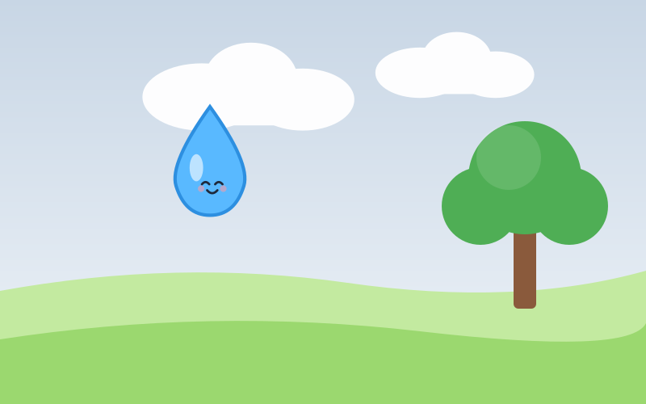
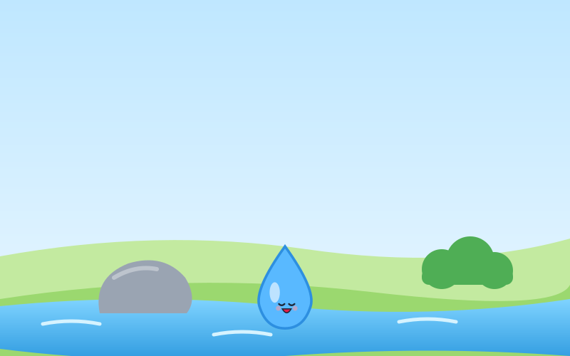
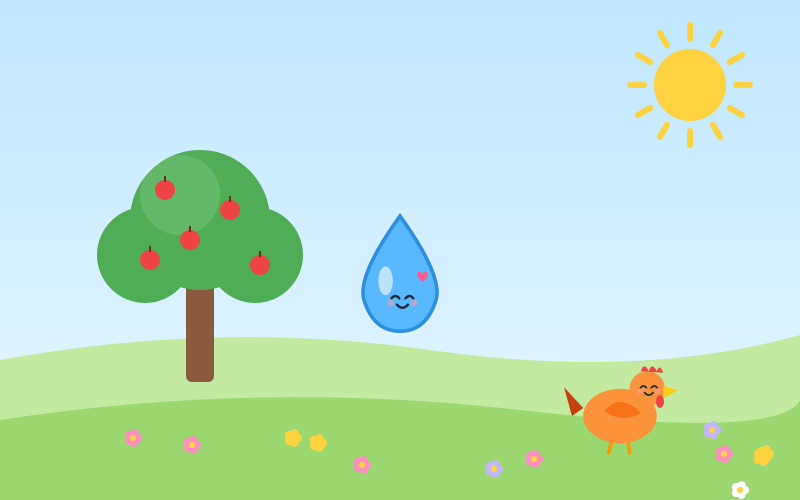
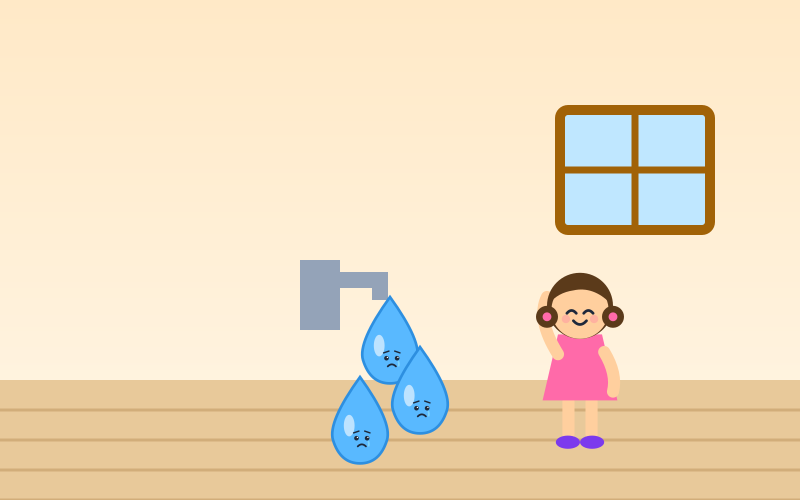
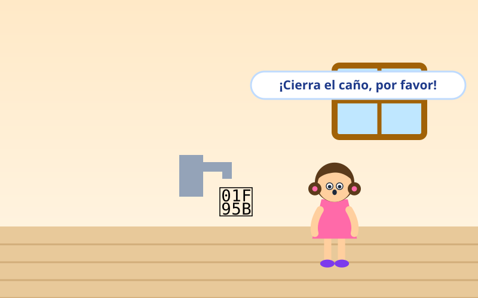
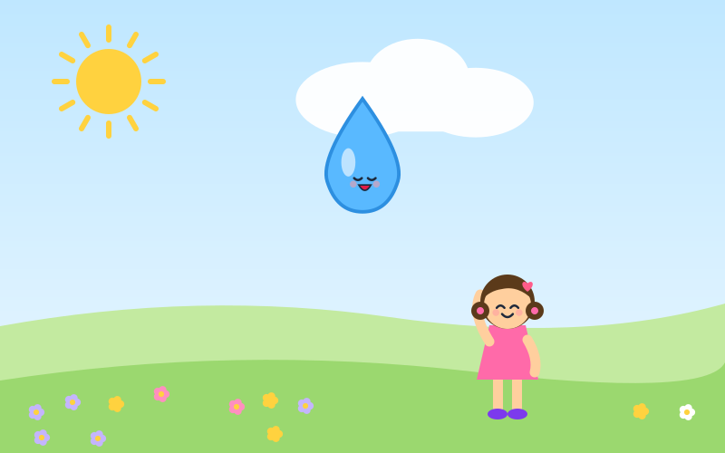

Gotita vivía en una nube blanca y esponjosa. Un día la nube se puso pesada y gris…
—¡Allá voy! —gritó Gotita, y cayó como lluvia.

Cayó en una montaña y bajó por un río, saltando entre piedras. ¡Era como un tobogán!

Gotita regó las flores del campo, dio de beber a una gallina sedienta y ayudó a crecer a un manzano.
—¡Me encanta ser útil! —dijo.

Un día llegó por un tubo a una casa. Una niña se cepillaba los dientes… ¡con el caño abierto! Muchas gotitas se iban por el desagüe sin servir para nada.
—¡Qué pena! —lloró Gotita.

Gotita juntó todas sus fuerzas y gritó. La niña la escuchó, cerró el caño y usó un vasito para enjuagarse.
—¡Así ahorro agua! —dijo la niña.

El sol calentó a Gotita y la subió otra vez a su nube. Desde arriba, saludó a la niña, que ahora cuidaba cada gota.
—¡Gracias por cuidarnos! El agua no es infinita.
El agua viaja y da vida a todos. Cuidarla es tarea de todos, también de los niños.
¿Por dónde viajó Gotita?
¿Por qué se puso triste en la casa?
¿Qué hizo la niña para ayudar?
Pongan un vasito junto al lavadero para enjuagarse los dientes.
Hagan una lista de 3 formas de ahorrar agua y péguenla en el baño.
Nombre a su hijo «guardián del agua» de la casa: que les recuerde cerrar el caño.
Expliquen juntos el ciclo del agua: nube, lluvia, río, casa y otra vez nube.